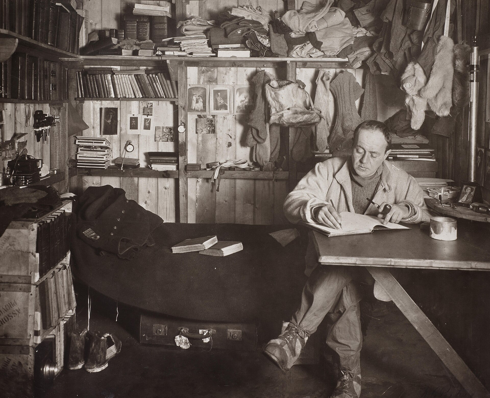

Chapter 3
The Ice Dock at Cape Evans
The ice dock took shape in the gray light of a January morning that had no dawn, only a slow brightening of the sky from black to charcoal to the pale, perpetual silver of the Antarctic summer. Men moved across the broken floes with the deliberate rhythm of labor that could not pause, laying planks end to end where the ship’s boats could touch, building a surface that would bear the weight of what the Terra Nova had carried from Cardiff. The temperature hung near freezing, cold enough to stiffen fingers and thicken oil, not cold enough to stop the work. Every hour mattered. The austral summer was already advancing toward its brief peak. After that, the ice would return, and the ship would have to go.
Edward Wilson recorded the scene in the diary he kept for science and for memory. He was forty years old, a physician and naturalist, chief of the scientific staff. He had accepted Scott’s invitation to return despite the private cost, leaving a wife whose health was uncertain, joining an expedition now shadowed by a rival timeline, its original methodical logic under strain.
On 4 January 1911, he wrote of the landing at Cape Evans, the small promontory of volcanic rock fifteen statute miles north of the Discovery’s old anchorage, where Scott had decided to plant the winter quarters. The choice was conservative, influenced by Scott’s memory of the “Skuary” from the Discovery days and his hope that the location would be free of ice in the short Antarctic summer, enabling the ship to come and go. It was also, in the ledger of Antarctic geography, a decision that committed everything that came after. The Terra Nova had arrived off Ross Island on that date, scouting first around Cape Crozier at the eastern point of the island before proceeding to McMurdo Sound to its west, where both Discovery and Nimrod had previously landed.
The unloading began at once. The ship carried 162 tons of supplies, equipment, and coal, stacked in her hold in the order of imagined priority. Now that order met the disorder of ice and tide. The first task was to build the pier. Sea ice pressed against the shore, but it was broken, shifting, unreliable. The men felled timber from crates and spars, laying planks where the floes ground against each other, creating a surface that could bear weight only where the pieces bridged the gaps. They worked in shifts through the twenty-four-hour daylight, the sun circling the sky without setting, their shadows shortening and lengthening like instruments they could not quite read.
Wilson noted the ponies as they were lowered over the side. There were nineteen now, two having died on the voyage. They came down in slings, hooves striking the ice, their bodies tense with the fear of a surface that offered no purchase, no smell of earth, no horizon they could understand. They wore snowshoes. The shoes had been designed in England, tested on grass, and now they met a surface that broke and refroze in ridges hard as stone. The animals stumbled. Their legs splayed. Lawrence Oates, the cavalry officer who had joined specifically to manage the transport animals, moved among them with the professional reserve that was already cracking under the evidence of his eyes.
The ponies were not thriving. The cold affected their lungs. Their hooves, soft from shipboard confinement, bruised on the rough surface. The snowshoes, intended to solve the problem of sinking into soft snow, created a new problem of slipping on hard ice. Oates watched one animal go down, then another. He applied blistering agents to strengthen legs. He adjusted feed rations, trying to balance caloric need against the limited stores. He watched the temperature in the stable they were building of packing cases and canvas, knowing that each degree below freezing added to the animals’ struggle to maintain body heat. The ponies were not bred for this. They were Manchurian and Siberian stock, selected for cold tolerance relative to English horses, but Antarctica was not a relative cold. It was an absolute. And the animals were already failing.
The motors came ashore on 6 January. They were the expedition’s technological wager, machines designed to revolutionize polar travel where animals failed. Each weighed more than half a ton. They were winched over the side in slings, lowered to the ice dock, and dragged across the broken surface to a staging area on the volcanic shore. Scott supervised the operation himself. He had invested personal reputation in the machines, had argued for their inclusion against skeptics who favored dogs or men alone.
Now he watched them arrive: three tractors with tracks and petrol engines, painted in the government colors of the expedition’s sponsors. They would not start for weeks. The cold thickened the oil. The mechanics worked in the open, hands bare to handle small parts, warming each component against their bodies before fitting it. The machines sat on the ice like promises that had not yet been tested against the keeping.
The hut rose in parallel. It was a prefabricated structure, designed in England to be carried in numbered sections and bolted together on site. The frame went up in three days, the walls and roof in four more. Inside, the men built a central living space with a stove at its heart, flanked by cubicles for the officers and a screened area for the men. The scientific laboratory occupied one end, with benches and storage for specimens, chemicals, and the photographic equipment that Ponting would use to document the work. The whole measured fifty feet by twenty-five, smaller than a London town house, larger than anything else on the island.
Wilson noted the completion date: 18 January. By then the ship had sailed, leaving thirty-three men to face the winter.
Scott had rejected reoccupying his 1902 hut at Hut Point, 20 km south, partly because that first hut was extremely cold for living quarters and partly because the Discovery had been trapped by sea ice there—a problem he hoped to avoid by establishing his new base farther north. The hut was erected on the north shore of Cape Evans on Ross Island, a building that would stand as the expedition’s winter quarters.
Apsley Cherry-Garrard, the youngest of the officers, assisted in the cataloguing of supplies. He was twenty-six, wealthy, awkward, eager to prove himself useful. His diary recorded the system: each item numbered, each number entered in a ledger with its contents and its intended destination. The ration boxes were the critical unit. Each contained enough food for one man for one week: pemmican, biscuit, butter, chocolate, tea, sugar.
The weights had been calculated in London by nutritionists who had never experienced cold appetite, the body’s demand for fuel in temperatures that stripped heat from every exertion. The boxes were stacked in the hut and in a separate storehouse built against the wall of snow that accumulated at the door. Some were for the hut. Some were for the depots that must be laid across the Barrier, mileposts of food and fuel that would make the long march possible. The arithmetic was precise. The margin was thin.
Scott moved between these operations with the energy of a man who could not afford to doubt. He inspected the hut, the motors, the pony lines, the scientific equipment. He held conferences with the officers, assigning roles for the depot journeys that would begin as soon as the initial settlement allowed. He wrote to the expedition’s supporters in England, letters that would not arrive for months, maintaining the narrative of progress and confidence that the funding required. And he read the meteorological records, the temperature readings and wind measurements that Wilson began to compile, building the baseline of data that was the expedition’s scientific justification. The numbers were stark. The mean temperature for January was 15°F. The wind averaged twenty miles per hour. The conditions were, by the standards of the Antarctic summer, moderate. They were also, by any standard of human or animal endurance, severe.
The first depot journey left on 27 January, before the hut was fully complete. Scott led it himself, with Wilson, Oates, and a party of men and ponies. The objective was to establish a supply cache at 79° 29′ S, approximately one hundred miles south across the Ross Ice Shelf. The ponies carried the loads, their snowshoes now supplemented with crampons for the harder surface. The journey took twelve days. The temperature dropped to -40°F. The ponies suffered. Two collapsed on the return and had to be shot, their meat cached for later use.
Wilson’s diary noted the loss with scientific regret, observing that the expedition could not sustain such a rate of attrition. Scott’s report emphasized the achievement: the depot was laid, the route reconnoitered, the principle of pony transport validated by the fact of arrival. The contradiction between these assessments—Wilson’s concern with means, Scott’s with ends—would widen in the months to come.
Back at Cape Evans, the winter routine settled into place. The sun dipped below the horizon on 24 April and would not rise again for four months. The men worked in artificial light, maintaining the hut, conducting scientific observations, preparing for the season that would follow.
The motors had failed their first tests, their engines seized in the cold despite every precaution. They were abandoned on the ice, monuments to technological optimism that the environment had refused.
The dogs, meanwhile, proved hardier than expected. Meares, the dog driver, had brought them from Siberia in conditions nearly as harsh as those they now faced. They adapted. They learned to work in harness, to respond to commands, to travel distances that the ponies could not match.
Scott noted this without revising his plan. The dogs would play a role, but a secondary one. The final march to the Pole, he had decided, would be made by men hauling sledges. It was a method he understood, one that placed the outcome in human will rather than animal capacity or mechanical fortune.
The scientific work continued. Wilson led parties to collect geological specimens, to measure magnetic variation, to observe the biology of the ice edge. Cherry-Garrard assisted, learning the methods of field observation, the discipline of recording what he saw without interpreting it prematurely.
In March, Wilson proposed a winter journey to Cape Crozier, to the emperor penguin breeding grounds that he had first visited on the Discovery expedition. The birds laid their eggs in the depth of the Antarctic night, in temperatures that approached -60°F. No human had observed this breeding cycle in its natural setting. The scientific purpose, as Wilson had argued in the Zoology section of the Discovery Expedition’s Scientific Reports, was to secure emperor penguin eggs at an early embryo stage, so that “particular points in the development of the bird could be worked out.”
The human risk was equally clear. Scott authorized the attempt, selecting Wilson, Bowers, and Cherry-Garrard for the party. They would travel sixty miles in darkness, using the moon and occasional starlight for navigation, camping on the ice shelf where crevasses opened without warning.
The winter journey became, in Cherry-Garrard’s later account, the definitive experience of his life. The party left on 27 June 1911, pulling two sledges with supplies for six weeks. The temperature averaged -47°F. Their sleeping bags froze so stiff that they had to be beaten into shape before use. Their breath iced the inside of the tent, falling on them as snow when they moved.
On the return, caught by a blizzard, they were confined to their bags for a day and a half while the drift buried them. Bowers sang to pass the time, his voice muffled by the wind and the frozen hood of his bag. They kicked each other through the fabric to confirm they were still alive. When the storm broke, they found their tent had blown away, carried half a mile across the ice.
They recovered it by chance, a piece of canvas against dark rock, and reached Cape Evans on 1 August, five weeks after departure, with three penguin eggs that would prove, on scientific examination in England, to contain embryos too developed for the evolutionary argument Wilson had hoped to advance.
The effort had been greater than the result. But the effort had been made.
This confirmation was dangerous. It allowed Scott to believe that what men could survive, they could achieve. The winter journey had pushed the boundary of the possible without crossing into the impossible. It had cost nothing that could not be replaced: time, calories, three penguin eggs.
The depot journeys that followed, in September and October, extended this logic. The ponies, weakened by the winter, were now asked to haul loads across the Barrier in temperatures that dropped below -30°F. They died in sequence, each loss requiring adjustment, improvisation, the redistribution of weight to men and to surviving animals.
Oates protested. His protests were recorded in the diaries of others, not in his own. Scott overruled him. The depots had to be laid, at specific latitudes, with specific supplies, to support the polar march that would begin in November.
The plan allowed no alternative. The plan had been made in England, in the abstract, and now it encountered the concrete with which it could not negotiate.
By late October, the base camp at Cape Evans had become the hub of a system under visible strain. The hut was warm, stocked, organized with the efficiency of a naval vessel. The scientific instruments recorded their data. The darkroom produced photographs of ice formations and geological formations and the faces of men who would not all survive to see them developed.
But outside, on the ice, the transport system was failing. The motors were abandoned. The ponies were dying. The dogs were limited in number and reserved for supporting roles. The men were fit, trained, committed, but they were being asked to haul weights that exceeded sustainable capacity over the distance required. And the rival was ahead.
Amundsen had established his base at the Bay of Whales, sixty miles closer to the Pole, and had begun his depot laying with dogs alone, a method Scott had rejected as insufficiently reliable. The British Antarctic Expedition’s interdependent logistics were frozen in place, their ultimate test deferred until spring.
The final preparations for the polar march proceeded in this atmosphere of accumulated compromise. Scott selected his party: twelve men to start, reducing by stages to the final five who would make the last push. The criteria were physical fitness, sledging experience, and the intangible quality of polar temperament that Scott believed he could judge. Wilson would come, for his scientific value and his steady presence. Oates would come, despite his protests about the ponies, because his military discipline was needed and his judgment could not be spared. Bowers would come, the veteran of the winter journey, compact, indefatigable, able to navigate by the sun and stars with equal precision. Evans, the strongest man in the party, would come for the hauling. And Scott himself would lead, as he had always intended, as the structure of the expedition required.
They left Cape Evans on 1 November 1911, pulling sledges loaded with supplies for the 850 miles to the Pole and back. The base camp watched them go, then turned to its own tasks: the continuing scientific program, the support of the remaining depot parties, the maintenance of the hut against the winter that would return.
The men who stayed wrote in their diaries with the habits of observers trained to record fact without speculation. They noted the weather, the temperature, the wind direction. They noted the departure of the dogs with Meares, the final relay of supplies to the depots already laid. They did not write, because they could not know, that the system they had built at Cape Evans—the careful weighing of rations, the numbered boxes, the ledgers of consumption and reserve—would prove insufficient to the demands placed upon it. They recorded what they saw. What they saw was a departure in good order, a plan proceeding as designed, a confidence earned by effort and now invested in the ice.

The base camp stood complete on its volcanic promontory, its supplies sorted and stored, its vulnerabilities unpacked alongside its equipment, its men trained to a method that had already begun to exact its price in animals and adaptations and the slow erosion of margin for error. The stage was set for the first depot journeys, and for everything that would follow.